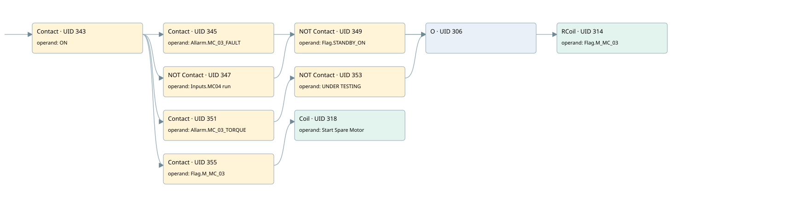

mc03 spare motor
motors 1 · 검색 색인 순서 11 · 원본 내부 NID 추정 10
백업 PLF 원본의 2787141 바이트 위치에서 복원한 XML. 검색 문서 1940의 객체 키 161022008e11000000000000와 연결했다. 이름 해석 9/9개. 남은 RefId는 상수 또는 미해석 참조다.
연결 구조 다시 그리기
원본 Part/PCon/Wire를 이용한 연결도다. TIA 화면의 래더 배치 또는 실행 결과를 재현한 그림은 아니다. 핀 연결은 아래 표와 원본 XML을 기준으로 읽는다. 노드 위에 마우스를 두면 피연산자 이름을 볼 수 있다.

접점·코일·블록과 피연산자
| Part UID | Gate | Negated 핀 | 연결 피연산자 |
|---|---|---|---|
| 343 | Contact | operand = ON | |
| 345 | Contact | operand = Allarm.MC_03_FAULT | |
| 347 | Contact | operand | operand = Inputs.MC04 run |
| 349 | Contact | operand | operand = Flag.STANDBY_ON |
| 351 | Contact | operand = Allarm.MC_03_TORQUE | |
| 353 | Contact | operand | operand = UNDER TESTING |
| 306 | O | ||
| 314 | RCoil | operand = Flag.M_MC_03 | |
| 355 | Contact | operand = Flag.M_MC_03 | |
| 318 | Coil | operand = Start Spare Motor |
접점 경로를 펼친 조건식
Contact·O/A·비교기의 원본 연결을 읽기 쉽게 펼친 보조 해석이다. POWER는 전원 레일 시작을 뜻한다. 호출 블록·에지·타이머의 내부 동작과 다중 쓰기 순서는 이 표로 실행 검증하지 않았다. 미해석 핀과 RefId는 원문 연결표에서 확인한다.
| UID | 동작 | 대상 | 원본 접점 경로 | 내용 |
|---|---|---|---|---|
| 314 | RCoil | Flag.M_MC_03 | ((ON AND Allarm.MC_03_FAULT) OR ((ON AND NOT [Inputs.MC04 run]) AND NOT [Flag.STANDBY_ON]) OR ((ON AND Allarm.MC_03_TORQUE) AND NOT [UNDER TESTING])) | 조건 성립 시 Reset |
| 318 | Coil | Start Spare Motor | (ON AND Flag.M_MC_03) | 조건에 따른 Coil 기록 |
원본 배선 연결
| Wire UID | 동일 Wire 연결 끝점 |
|---|---|
| 357 | Powerrail {} ↔ Part 343.in |
| 328 | ORef 319 (ON) ↔ Part 343.operand |
| 344 | Part 343.out ↔ Part 345.in ↔ Part 347.in ↔ Part 351.in ↔ Part 355.in |
| 329 | ORef 320 (Allarm.MC_03_FAULT) ↔ Part 345.operand |
| 346 | Part 345.out ↔ Part 306.in1 |
| 330 | ORef 321 (Inputs.MC04 run) ↔ Part 347.operand |
| 348 | Part 347.out ↔ Part 349.in |
| 331 | ORef 322 (Flag.STANDBY_ON) ↔ Part 349.operand |
| 350 | Part 349.out ↔ Part 306.in2 |
| 333 | ORef 323 (Allarm.MC_03_TORQUE) ↔ Part 351.operand |
| 352 | Part 351.out ↔ Part 353.in |
| 334 | ORef 324 (UNDER TESTING) ↔ Part 353.operand |
| 354 | Part 353.out ↔ Part 306.in3 |
| 336 | Part 306.out ↔ Part 314.in |
| 338 | ORef 325 (Flag.M_MC_03) ↔ Part 314.operand |
| 339 | ORef 326 (Flag.M_MC_03) ↔ Part 355.operand |
| 356 | Part 355.out ↔ Part 318.in |
| 341 | ORef 327 (Start Spare Motor) ↔ Part 318.operand |
식별자 해석 근거 9개
| ORef UID | RefId | 이름 | IdentXmlPart 파일 | 해석 방법 |
|---|---|---|---|---|
| 319 | 1 | ON | 0602-IdentXmlPart.xml | UID/RID + search-text + NID agreement |
| 320 | 57 | Allarm.MC_03_FAULT | 0604-IdentXmlPart.xml | UID/RID + search-text + NID agreement |
| 321 | 259 | Inputs.MC04 run | 0604-IdentXmlPart.xml | UID/RID + search-text + NID agreement |
| 322 | 11 | Flag.STANDBY_ON | 0604-IdentXmlPart.xml | UID/RID + search-text + NID agreement |
| 323 | 59 | Allarm.MC_03_TORQUE | 0604-IdentXmlPart.xml | UID/RID + search-text + NID agreement |
| 324 | 4 | UNDER TESTING | 0602-IdentXmlPart.xml | UID/RID + search-text + NID agreement |
| 325 | 60 | Flag.M_MC_03 | 0604-IdentXmlPart.xml | UID/RID + search-text + NID agreement |
| 326 | 60 | Flag.M_MC_03 | 0604-IdentXmlPart.xml | UID/RID + search-text + NID agreement |
| 327 | 61 | Start Spare Motor | 0602-IdentXmlPart.xml | UID/RID + search-text + NID agreement |
검색 코드 보조 자료
참조 명칭을 찾기 위한 자료이며 실행 순서나 AND/OR 관계는 위 연결표로 확인한다.
"on" "allarm".mc_03_fault "flag".m_mc_03 "inputs"."mc04 run" "flag".standby_on "allarm".mc_03_torque "under testing" "flag".m_mc_03 "start spare motor"